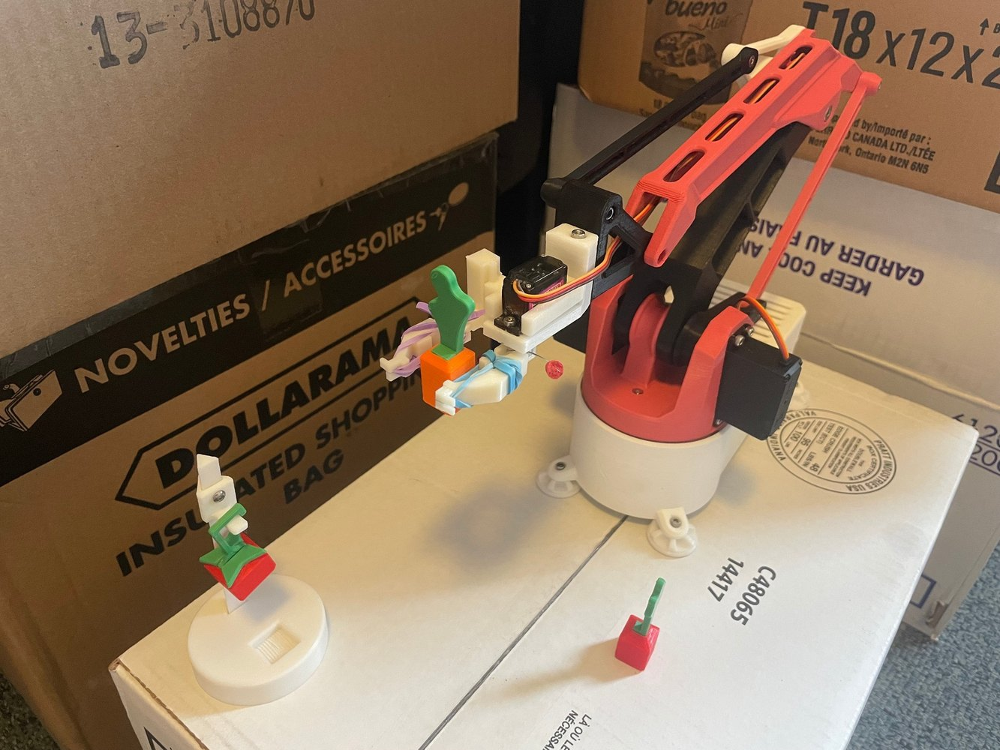

Robotics · Lunar greenhouse end effector
HarveStar Lunar Harvest End Effector
A CSA-client project focused on a crab-claw end effector prototype for autonomous lunar greenhouse harvesting, with servo control, path planning, emergency stop logic, and SolidWorks stress simulation.
SolidWorks
Stress Simulation
CircuitPython
Servo Control